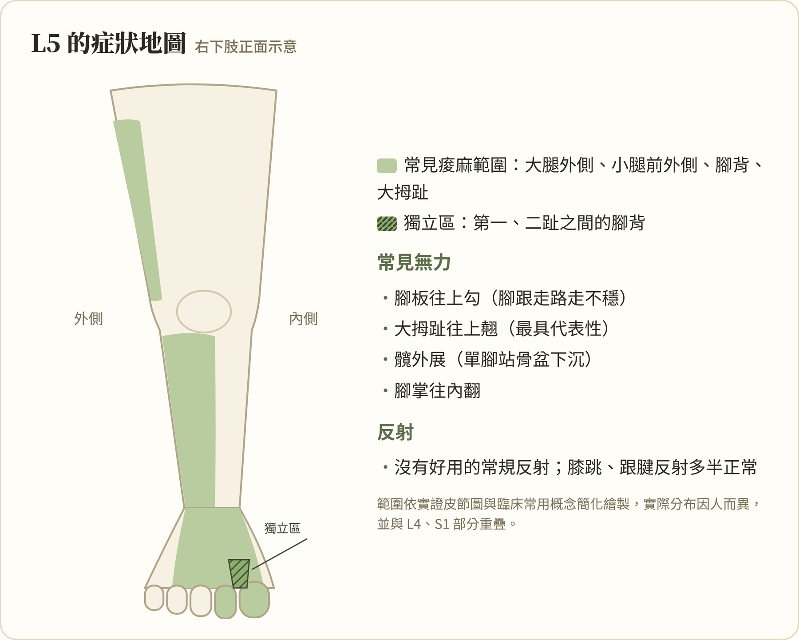
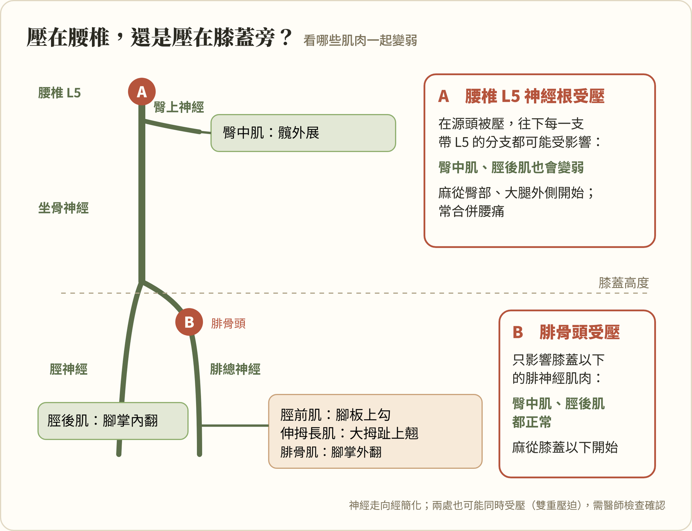

腳背麻、腳板抬不起來，走路會拖腳？認識 L5 神經根壓迫
一位 40 多歲的室內裝修師傅，每天蹲著、跪著鋪木地板。一個月前開始腰痠，接著右邊屁股外側一路麻到小腿外側，再往下到腳背。
上禮拜他發現事情不太對：走路時右腳尖會「勾到」門檻，下樓梯時右腳掌落地會「啪」一聲拍在階梯上。「醫師，我是不是蹲太久，壓到膝蓋旁邊的神經？」
（文中個案為綜合門診常見情況的示意，非特定患者。）
他的猜測其實很有道理——久蹲、久跪，正是膝蓋外側的腓總神經最常被壓到的姿勢。但他同時有腰痠、有從屁股往下的麻，所以我心裡放了兩個答案：腰椎的 L5 神經根，或是膝蓋旁的腓總神經。要分出來，靠的是幾個簡單的檢查，後面會一一說明。
之前那篇談的是 S1：小腿後面麻、墊腳尖沒力。這一篇的 L5 剛好是它的另一半：腳背麻、腳板抬不起來。一個管「往下踩」，一個管「往上勾」。
一、先自我對照：你的症狀像 L5 嗎？
下面幾項，可以先對照看看（左右腳比較最準）：
- 麻、刺、電的範圍：從臀部外側、大腿外側，往下到小腿前外側、腳背，最遠到大拇趾和第二趾之間
- 用腳跟走路時，患側的腳尖翹不起來、一直往下掉
- 大拇趾往上翹，患側明顯比較沒力
- 走路時腳尖常勾到門檻、地毯，或踢到地面
- 患側單腳站時，骨盆往另一邊掉、身體晃來晃去
- 咳嗽、打噴嚏、久坐彎腰時，腿的症狀會加重
如果第一項加上後面幾項有好幾個對得上，L5 神經根就值得放進考慮。不過自我對照只是幫你整理症狀、方便和醫師溝通，不能取代當面檢查；尤其是「腳板抬不起來」，請直接看第八段的就醫警訊。
二、L5 神經根從哪裡來、往哪裡去
腰椎神經根從同號椎骨的「下方」鑽出去，所以 L5 是從 L5-S1 之間的椎間孔出來的。
但 L5 在出門之前，要先經過一段路：它在椎管裡往下走時，會先貼著 L4-L5 椎間盤的後方，穿過那一節的側隱窩，再往下從 L5-S1 的椎間孔鑽出去。出去之後，還要從 L5 橫突和薦骨翼之間的縫隙往前繞。
可以把它想成一條要過三道關卡的電線：
- 第一道：L4-L5 的側隱窩（椎管裡面）
- 第二道：L5-S1 的椎間孔（出口）
- 第三道：L5 橫突與薦骨翼之間（出口外面）
任何一道門變窄，都可能夾到同一條 L5。這也是為什麼 L5 的症狀，可能對應到影像上不同的節段。
出來之後，L5 和 L4 的一部分合成「腰薦幹」（lumbosacral trunk），再加入坐骨神經往下走，到膝蓋後方分成兩支：脛神經和腓總神經。L5 的纖維大量走在腓總神經裡，負責把腳板往上勾、把大拇趾往上翹。
還有一條常被忽略的分支：臀上神經（superior gluteal nerve），它也帶著 L5 的纖維，負責臀中肌、臀小肌——也就是讓你單腳站時骨盆不會往下掉的那組肌肉。記住這一點，第五段分辨「腰椎還是膝蓋」時會用到。
三、L5 的症狀地圖
每一條神經根都負責三件事：一塊皮膚的感覺、一組肌肉的力量、一個反射。L5 的三件事是：
| 項目 | L5 負責的範圍 | 受壓時可能出現 |
|---|---|---|
| 感覺（皮節） | 大腿外側、小腿前外側、腳背、大拇趾 | 痠、麻、電擊感往下到腳背；第一、二趾之間感覺變鈍 |
| 力量（肌節） | 腳板上勾（脛前肌）、大拇趾上翹（伸拇長肌）、髖外展（臀中肌）、腳掌內翻（脛後肌） | 腳跟走路走不穩、走路拖腳、單腳站骨盆下沉 |
| 反射 | 沒有好用的常規反射 | 膝跳反射（L4）、跟腱反射（S1）多半正常，這反而是線索 |

L5 的獨立區在腳背上，大拇趾和第二趾之間的那一小塊皮膚。這裡和鄰居重疊最少，感覺變鈍時，定位就很有參考價值。
力量那一欄裡，最能代表 L5 的是「大拇趾上翹」：伸拇長肌（extensor hallucis longus, EHL）幾乎只靠 L5，比脛前肌（L4、L5 都有參與）更專一。
S1 那篇提過，S1 是腰椎神經根裡疼痛最「照地圖走」的一條；L5 就沒那麼守規矩，痛常常比較模糊，散在臀部與大腿外側。所以判斷 L5，我更依賴力量那一欄，而不是只看痛在哪裡。
什麼是「垂足」？
當脛前肌和伸拇肌明顯無力，腳板就抬不起來，醫學上叫做足下垂（foot drop），俗稱垂足。
腳板抬不起來，放下時也收不住。所以走路時腳尖會勾到地面，患者只好把膝蓋抬得特別高來代償，這叫跨閾步態（steppage gait）；下樓梯或腳跟著地後，腳掌沒有肌肉「踩煞車」，就會「啪」一聲拍到地上。
垂足不是單純的痠麻，而是神經「力量」已經受影響的訊號，所以它本身就是需要盡快評估的警訊。
四、壓到 L5 的常見原因
對照前面的三道關卡，臨床上我會把這幾種可能放在一起想：
- L4-L5 旁中央型椎間盤突出：最常見。突出剛好擋在 L5 穿過側隱窩的路上，常見於搬重物、久坐、長時間彎腰工作的人。
- L4-L5 側隱窩狹窄、退化性滑脫：小面關節肥厚、黃韌帶變厚，或 L4 往前滑，把側隱窩擠窄。多半年紀較大，站久、走久症狀加劇，坐下彎腰反而舒服。
- L5-S1 椎間孔狹窄、極外側型突出：S1 那篇「順帶一提」的那種突出，在這裡成了主角——同一節 L5-S1，往後中間突出壓的是 S1，往外側突出壓的就是 L5。
- L5 峽部解離、滑脫：常是年輕時運動留下的骨頭裂縫，L5 往前滑時，L5-S1 的椎間孔被擠扁，L5 神經根就在出口被夾住。
- 出口外的夾擠：退化性側彎或腰薦移行椎的人，L5 橫突和薦骨翼之間的縫可能變窄，在椎管外面把 L5 夾住。這一型在一般腰椎 MRI 上很容易被忽略，需要特別去找。
所以，影像報告寫「L4-L5」或「L5-S1」椎間盤突出，都可能是 L5 神經根的問題；反過來，看到哪一節突出，也不代表症狀一定來自那裡。對答案時，症狀、檢查和影像要互相吻合。
五、容易和 L5 混淆的問題
腳背麻、腳抬不起來，不一定來自腰椎。門診最常見、也最重要的「模仿者」，是膝蓋外側的腓總神經。
| 問題 | 症狀像 L5 的地方 | 和 L5 不一樣的線索 |
|---|---|---|
| 腓總神經在腓骨頭受壓 | 小腿外側到腳背麻、垂足 | 常見於翹腳、久蹲久跪、體重快速下降、打石膏或膝部手術後；麻從膝蓋以下開始；髖外展與腳掌內翻正常；腰不太痛 |
| L4 神經根 | 腳板上勾無力 | 麻在小腿內側；膝跳反射變弱；大拇趾上翹相對有力 |
| 深臀症候群 | 坐骨神經在臀部受壓，可麻到小腿與腳 | 「坐不住」、臀部深處壓痛；常 L5、S1 區域一起不舒服 |
| 臀小肌肌痛點 | 轉移痛沿大腿、小腿外側往下，稱為「假性坐骨神經痛」 | 按壓臀部肌痛點能重現症狀；肌力、感覺正常 |
| 中樞神經問題（中風、脊髓病變等） | 突然腳抬不起來 | 常不痛；可能合併臉歪、說話不清、手無力或反射變強——請立刻就醫 |
分辨 L5 和腓總神經，最關鍵的一招是看膝蓋以上的肌肉。
腓總神經是在膝蓋旁邊才被壓到，它管不到臀部；但 L5 神經根是在源頭被壓到，所以連臀上神經支配的臀中肌，還有走脛神經的脛後肌（腳掌內翻），都可能一起變弱。

曾有一項研究分析 61 位腳板上勾肌力明顯不足的患者，最後確診為腓神經病變的人（28 位），其實比腰椎神經根病變（21 位）還多。而「髖外展無力」在腰椎神經根病變中約 86% 會出現，在腓神經病變中卻不到 4%。這個結果，就成了我在門診的判斷原則：看到垂足，一定請患者側躺抬腿，比一比兩邊的髖外展。
當然，兩邊也可能同時有問題：腰椎先讓神經變得脆弱，膝蓋旁再被壓一次，稱為雙重壓迫（double crush）。像開頭那位裝修師傅這樣既有腰痠、工作又常蹲跪的人，兩個地方都要檢查。
六、門診怎麼確認是 L5
1. 腳跟走路測試
這是 S1「單腳墊腳尖」的對照版。請患者用腳跟走路，腳尖盡量翹高。脛前肌的力氣不小，醫師用手抗衡不一定測得出輕微無力，但腳跟走路走個幾步，患側腳尖往下掉、走不穩，就很明顯。
2. 大拇趾上翹
請患者把大拇趾往上翹，醫師用一根手指往下壓，兩邊比較。這是最能代表 L5 的單一肌肉。
3. 髖外展與單腳站
側躺把腿往上抬，醫師在膝蓋外側施力抗衡；再請患者單腳站，觀察骨盆有沒有往對側下沉（Trendelenburg 徵象）。這是分辨腰椎與腓總神經的關鍵。
4. 腳掌內翻與外翻
腳掌往內翻（脛後肌）主要走脛神經，往外翻（腓骨肌）走腓淺神經，兩者都帶 L5 纖維。內翻也變弱，比較像 L5；只有外翻和上勾弱、內翻正常，比較像腓總神經。
5. 獨立區的感覺與反射
輕碰兩腳第一、二趾之間的腳背，問感覺有沒有一樣清楚；再敲膝跳和跟腱反射，若都正常，反而支持 L5（L5 沒有好用的常規反射）。
6. 超音波看腓骨頭
腓總神經在腓骨頭旁邊走得很表淺，超音波可以直接看神經有沒有腫大、旁邊有沒有囊腫壓迫。這一步能幫忙確認，膝蓋旁邊是不是也有卡點。
7. 影像與神經電學檢查
MRI 用來確認腰椎壓迫的位置與型態；神經傳導與肌電圖則能直接分辨是神經根、還是腓總神經的問題，一般在症狀出現約 3 週後做，結果較有參考價值。垂足的患者，我通常會積極安排或轉介這兩項檢查，不會只靠觀察等待。
回到開頭那位裝修師傅：側躺抬腿時，他的右側髖外展明顯比左邊弱，腳掌內翻也沒力，這把方向指回了腰椎的 L5；但他的工作型態，讓腓骨頭也需要一起檢查。
七、治療思路：有垂足時，先談時機
其他腰痛，我會先問「壓在哪裡」；有垂足時，第一個問題是「現在還能等多久」。
曾有系統性回顧以個別患者資料分析發現，椎間盤突出造成單側垂足而接受減壓手術的人，若在症狀出現 6 週內處理，日後肌力恢復較好的機會可高出約 6 倍；術前腳板還能抬一點（肌力 2 到 3 級）的人，恢復也明顯比完全抬不起來的好。另一項統合分析也發現，合併糖尿病的人恢復較差。
這些分析多半是回溯性研究，不是每個垂足都需要開刀；但它們提醒我一件事：神經的力量恢復有「黃金期」。所以我的安排是：
- 輕微無力、且一週一週在進步：在密切追蹤肌力下保守治療，每次回診都重測腳跟走路、大拇趾與髖外展。
- 明顯垂足、或力氣持續變差：直接轉介脊椎外科評估，保守治療可以並行，但不取代外科的判斷。
針刀與乾針：處理的是軟組織
壓迫點在椎管裡時，針刀碰不到突出本身，也不會把椎間盤「推回去」。它能處理的是外面那一層：
- L4-L5、L5-S1 周圍的保護性痙攣：多裂肌、豎脊肌，減少「痛→緊→更痛」的循環。
- 臀中肌、臀小肌的肌痛點：處理和 L5 重疊的轉移痛，也讓之後的肌力訓練更順利。
- 周邊的卡點：若超音波下看到腓總神經在腓骨頭周圍受筋膜沾黏，可評估在影像導引下處理雙重壓迫中周邊的那一個。
讓腳先安全地走路
垂足最大的立即風險是跌倒。必要時可以先使用足踝支架（踝足矯具，AFO），讓腳板在走路時維持在中立位置，同時避免跟腱慢慢攣縮。
運動方面，急性期以「不誘發腿部症狀」為原則；之後重點放在脛前肌、伸拇肌、臀中肌的重新啟動，以及多裂肌與深層核心的控制，配合物理治療師安排動作訓練。
中藥調養
依體質與病程選方，例如麻木無力、偏氣虛血瘀者可參考補陽還五湯的思路，慢性反覆、腰膝痠軟者常以獨活寄生湯加減。中藥的角色是協助調整體質、配合整體治療，需由醫師診察後開立，請勿自行購買服用。
治療前須知
- 乾針、針刀皆屬侵入性處置，可能出現痠痛、瘀青、短暫麻木感、感染等風險。腓骨頭附近神經走得很表淺，腰椎周圍的位置又深，相關處置會在超音波導引下確認針尖位置、避開神經，影像看不清楚時不做深層處置。
- 服用抗凝血劑、有凝血功能異常、懷孕或治療部位有傷口感染者，請先告知醫師。
- 每個人的狀況不同，治療方式與順序需經醫師當面評估後安排。
八、出現這些症狀，請盡快就醫
- 腳板突然抬不起來，或幾天之內越來越無力：請盡快就醫評估，不要等「下禮拜再看看」。
- 不痛、但腳抬不起來：無痛的垂足一樣要當一回事，不痛不代表神經沒事。
- 會陰、肛門周圍麻木，或排尿、排便異常：需排除馬尾症候群，請立刻就醫。
- 雙腳都開始麻、無力。
- 合併臉歪、說話不清、單側手腳無力：可能是中風，請立刻撥打 119。
- 伴隨發燒、不明原因體重減輕、癌症病史，或重大外傷後發生。
遇到這些狀況，我會直接建議轉介急診或脊椎外科，讓患者在最短時間內得到影像與外科評估。
九、重點結論
- L5 從 L5-S1 椎間孔出來，但出門前先經過 L4-L5 的側隱窩，出門後還要繞過薦骨翼，三道關卡都可能夾到它。
- L5 的三件事：腳背麻、腳板與大拇趾抬不起來、沒有好用的反射；獨立區在第一、二趾之間的腳背。
- 最常見的原因是 L4-L5 椎間盤突出，但椎間孔狹窄、峽部滑脫、出口外夾擠都要想到。
- 最重要的模仿者是腓總神經：看膝蓋以上——髖外展無力，比較像 L5。
- 垂足本身就是警訊：神經力量有黃金期，越早評估，選擇越多。
S1 墊不起腳尖，L5 抬不起腳板；一上一下，都是神經最誠實的語言。
本文僅供醫療衛生教育參考，不能取代醫師的診斷與治療。每個人的病情、體質與治療反應不同，文中提及的治療方式並非適用於所有人，亦不保證療效；侵入性治療可能伴隨副作用與風險。如有身體不適，請尋求合格醫療專業人員當面評估。
參考文獻
- Lee MW, McPhee RW, Stringer MD. An evidence-based approach to human dermatomes. Clin Anat. 2008;21(5):363-373.
- Fardon DF, Williams AL, Dohring EJ, et al. Lumbar disc nomenclature: version 2.0. Spine J. 2014;14(11):2525-2545.
- Jeon CH, Chung NS, Lee YS, Son KH, Kim JH. Assessment of hip abductor power in patients with foot drop: a simple and useful test to differentiate lumbar radiculopathy and peroneal neuropathy. Spine (Phila Pa 1976). 2013;38(3):257-263. doi:10.1097/BRS.0b013e318268c8bc
- Santangelo G, Singh A, Catanzaro M, et al. Double crush syndrome in the lower extremity: simultaneous L5 radiculopathy and common peroneal nerve compression. World Neurosurg. 2025;194:123502. doi:10.1016/j.wneu.2024.11.085
- Baig Mirza A, Khizar Khoja A, Naidu V, et al. Prognostic factors and surgical outcomes of foot drop secondary to lumbar degenerative disease: a systematic review and individual patient data meta-analysis. Eur Spine J. 2025;34(4):1386-1397. doi:10.1007/s00586-025-08711-5
- Song SY, Nam DC, Moon DK, et al. Surgical decompression timing for patients with foot drop from lumbar degenerative diseases: a meta-analysis. Eur Spine J. 2022;31(3):551-560. doi:10.1007/s00586-021-07045-2
- Hou Y, Liang L, Zhao T, et al. A meta-analysis of prognostic factors in surgical treatment of foot drop due to lumbar degenerative diseases. World Neurosurg X. 2023;19:100214. doi:10.1016/j.wnsx.2023.100214